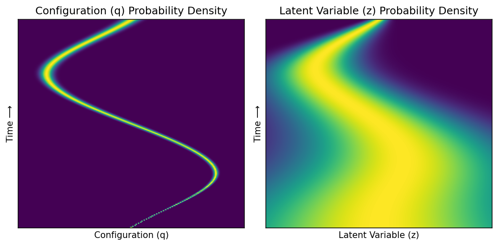
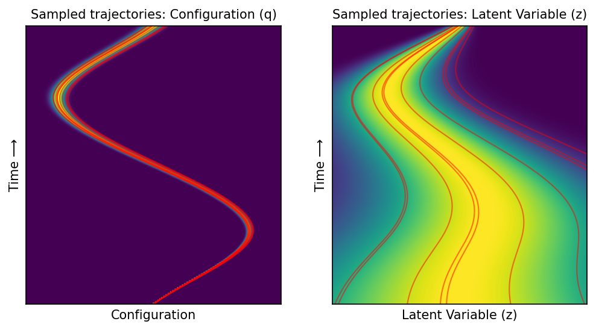

Flow matching matches marginal (not joint) distribution at every time step within trajectory chunk#
import matplotlib.pyplot as plt
import numpy as np
import torch; torch.set_default_dtype(torch.double)
from streaming_flow_policy.all import StreamingFlowPolicyLatent
from streaming_flow_policy.toy.plot_latent import (
plot_probability_density_q,
plot_probability_density_z,
plot_probability_density_and_streamlines_q,
plot_probability_density_and_streamlines_z,
plot_probability_density_with_trajectories,
)
from pydrake.all import (
PiecewisePolynomial,
Trajectory,
)
# Set seed
np.random.seed(0)
Set hyperparameters#
σ0 = 0.001
σ1 = 0.05
k = 1
def demonstration_traj_right() -> Trajectory:
return PiecewisePolynomial.CubicWithContinuousSecondDerivatives(
breaks=[0.00, 0.25, 0.50, 0.75, 1.0],
samples=[[0.00, 0.75, 0.00, -0.75, 0.00]],
sample_dot_at_start=[[3.0]],
sample_dot_at_end=[[3.0]],
)
def demonstration_traj_left() -> Trajectory:
return PiecewisePolynomial.CubicWithContinuousSecondDerivatives(
breaks=[0.00, 0.25, 0.50, 0.75, 1.0],
samples=[[0.00, -0.75, 0.00, 0.75, 0.00]],
sample_dot_at_start=[[-3.0]],
sample_dot_at_end=[[-3.0]],
)
traj_right = demonstration_traj_right()
traj_left = demonstration_traj_left()
Plot demonstration trajectories#
"""
Plot demonstration trajectory on x-y plane where x axis is the state in [-1, 1]
and y axis is the time in [0, 1].
"""
times = np.linspace(0, 1, 100)
plt.plot(traj_right.vector_values(times)[0], times, color='blue', alpha=0.9)
plt.plot(traj_left.vector_values(times)[0], times, color='red', alpha=0.9)
plt.xlim(-1, 1)
plt.ylim(0, 1)
plt.xlabel('Configuration')
plt.ylabel('Time ⟶')
plt.title('Demonstration Trajectories')
plt.grid(True)
plt.show()
Conditional flow#
fp = StreamingFlowPolicyLatent(dim=1, trajectories=[traj_right], prior=[1.0], σ0=σ0, σ1=σ1, k=k)
Plot conditional probability path of right trajectory#
fig = plt.figure(figsize=(8, 4), dpi=150)
xs = torch.linspace(-1, 1, 200)
ts = torch.linspace(0, 1, 200)
ts, xs = torch.meshgrid(ts, xs, indexing='ij') # (T, X)
gs = fig.add_gridspec(1, 2, width_ratios=[1, 1])
ax1 = fig.add_subplot(gs[0])
ax2 = fig.add_subplot(gs[1])
plot_probability_density_q(fp, ts, xs, ax1)
plot_probability_density_z(fp, ts, xs, ax2)
ax1.set_title('Configuration (q) Probability Density', size='large')
ax2.set_title('Latent Variable (z) Probability Density', size='large')
ax1.set_xlabel('Configuration (q)')
ax1.set_ylabel('Time ⟶')
ax2.set_xlabel('Latent Variable (z)')
ax2.set_ylabel('Time ⟶')
plt.tight_layout()
plt.show()

Plot conditional velocity field of right trajectory, taking expectation over other variable#
fig = plt.figure(figsize=(8, 4), dpi=150)
xs = torch.linspace(-1, 1, 200)
ts = torch.linspace(0, 1, 200)
ts, xs = torch.meshgrid(ts, xs, indexing='ij') # (T, X)
gs = fig.add_gridspec(1, 2, width_ratios=[1, 1])
ax1 = fig.add_subplot(gs[0])
ax2 = fig.add_subplot(gs[1])
plot_probability_density_and_streamlines_q(fp, ax1)
plot_probability_density_and_streamlines_z(fp, ax2)
ax1.set_title('Configuration (q) Density and Flow', size='large')
ax2.set_title('Latent Variable (z) Density and Flow', size='large')
ax1.set_xlabel('Configuration (q)')
ax1.set_ylabel('Time ⟶')
ax2.set_xlabel('Latent Variable (z)')
ax2.set_ylabel('Time ⟶')
plt.tight_layout()
plt.show()
Plot trajectories under conditional flow of right trajectory#
q_starts = [0.0] * 10
z_starts_pos = np.abs(np.random.randn(5))
z_starts_neg = -np.abs(np.random.randn(5))
z_starts = sorted(np.concatenate([z_starts_neg, z_starts_pos]))
colors = ['red'] * 5 + ['red'] * 5
fig = plt.figure(figsize=(8, 4), dpi=150)
gs = fig.add_gridspec(1, 2, width_ratios=[1, 1])
ax1 = fig.add_subplot(gs[0])
ax2 = fig.add_subplot(gs[1])
plot_probability_density_with_trajectories(
fp, ax1, ax2, q_starts, z_starts, colors, num_points_x=400,
)
plt.show()

Marginal flow#
fp = StreamingFlowPolicyLatent(dim=1, trajectories=[traj_right, traj_left], prior=[0.5, 0.5], σ0=σ0, σ1=σ1, k=k)
Plot marginal probability path#
fig = plt.figure(figsize=(8, 4), dpi=150)
xs = torch.linspace(-1, 1, 200)
ts = torch.linspace(0, 1, 400)
ts, xs = torch.meshgrid(ts, xs, indexing='ij') # (T, X)
gs = fig.add_gridspec(1, 2, width_ratios=[1, 1])
ax1 = fig.add_subplot(gs[0])
ax2 = fig.add_subplot(gs[1])
plot_probability_density_q(fp, ts, xs, ax1)
plot_probability_density_z(fp, ts, xs, ax2)
ax1.set_title('Configuration (q) Probability Density', size='large')
ax2.set_title('Latent Variable (z) Probability Density', size='large')
ax1.set_xlabel('Configuration (q)')
ax1.set_ylabel('Time ⟶')
ax2.set_xlabel('Latent Variable (z)')
ax2.set_ylabel('Time ⟶')
plt.tight_layout()
plt.show()
Plot marginal velocity field, taking expectation over other variable#
fig = plt.figure(figsize=(8, 4), dpi=150)
xs = torch.linspace(-1, 1, 200)
ts = torch.linspace(0, 1, 200)
ts, xs = torch.meshgrid(ts, xs, indexing='ij') # (T, X)
gs = fig.add_gridspec(1, 2, width_ratios=[1, 1])
ax1 = fig.add_subplot(gs[0])
ax2 = fig.add_subplot(gs[1])
plot_probability_density_and_streamlines_q(fp, ax1)
plot_probability_density_and_streamlines_z(fp, ax2)
ax1.set_title('Configuration (q) Density and Flow', size='large')
ax2.set_title('Latent Variable (z) Density and Flow', size='large')
ax1.set_xlabel('Configuration (q)')
ax1.set_ylabel('Time ⟶')
ax2.set_xlabel('Latent Variable (z)')
ax2.set_ylabel('Time ⟶')
plt.tight_layout()
plt.show()
Plot trajectories under marginal flow#
q_starts = [0.0] * 30
z_starts_pos = np.abs(np.random.randn(15))
z_starts_neg = -np.abs(np.random.randn(15))
z_starts = sorted(np.concatenate([z_starts_pos, z_starts_neg]))
colors = ['blue'] * 15 + ['red'] * 15
fig = plt.figure(figsize=(8, 4), dpi=150)
gs = fig.add_gridspec(1, 2, width_ratios=[1, 1])
ax1 = fig.add_subplot(gs[0])
ax2 = fig.add_subplot(gs[1])
plot_probability_density_with_trajectories(
fp, ax1, ax2, q_starts, z_starts, colors,
heatmap_alpha=0.5,
linewidth_q=1, linewidth_z=2,
num_points_x=400,
ode_steps=10000,
)
plt.show()